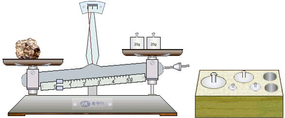
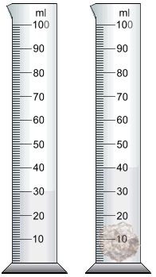

用天平和量筒测量石块的密度
1.新建一个实验项目。
2.在这个实验中，我们要用天平测量称量出小石块的质量，用量筒测出它的体积。我们需要用到天平，量筒和一个小石块。从器件箱中“拿出”这些器件，放置在实验区中。
3.我们先用天平称量出小石块的质量。根据规范，被测物体只能放在天平的左盘上。用鼠标左键点中小石块不放，滑动鼠标，把小石块移到天平的左盘上，然后松开鼠标，小石块就被放在了天平的左盘上了。天平的砝码可以用同样的方法放在天平的右托盘上。移动游码时，用鼠标按住游码不放，然后左右移动就可以了。

4.然后我们用量筒测量小石块的体积。先在量筒中放入30克的水，然后把石块放入量筒中，液面上升后，再读出量筒的读数。小石块的体积就是两次的读数差。

5.最后通过计算就可以得出小石块的密度了。
下载本课件